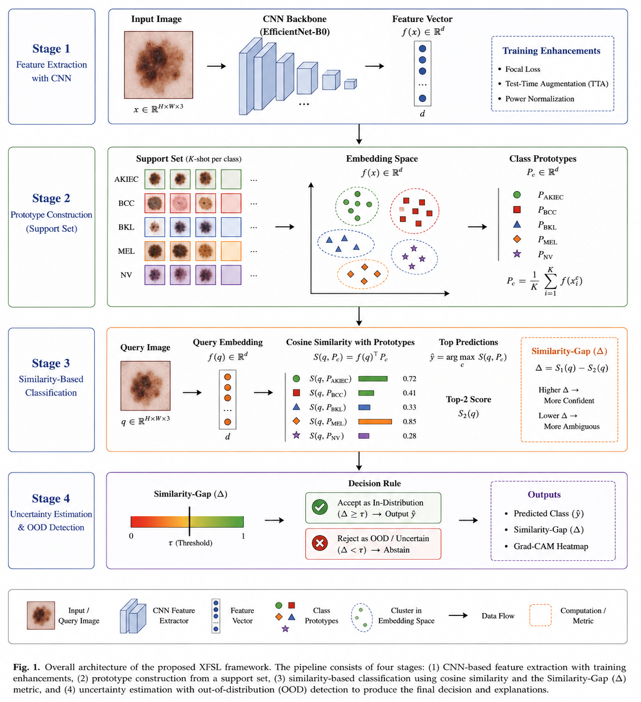
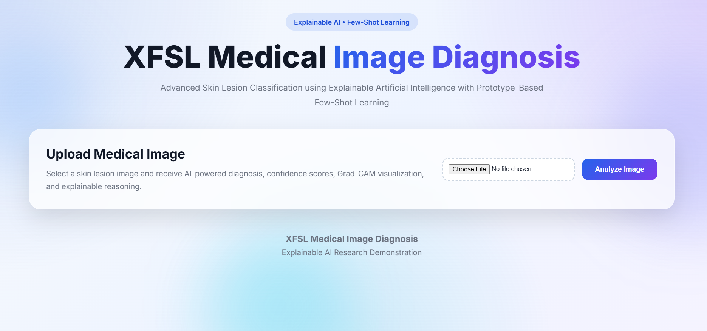
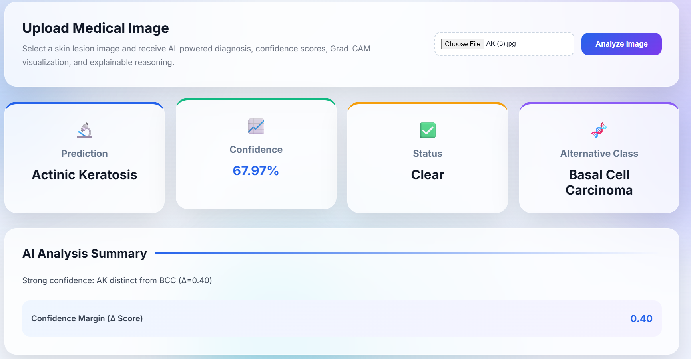
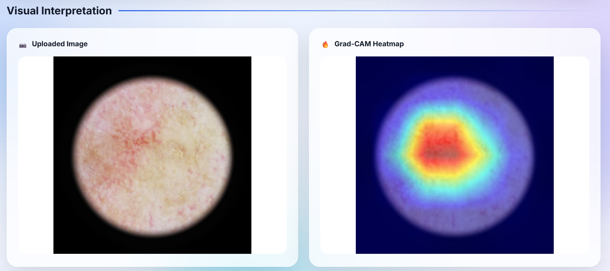
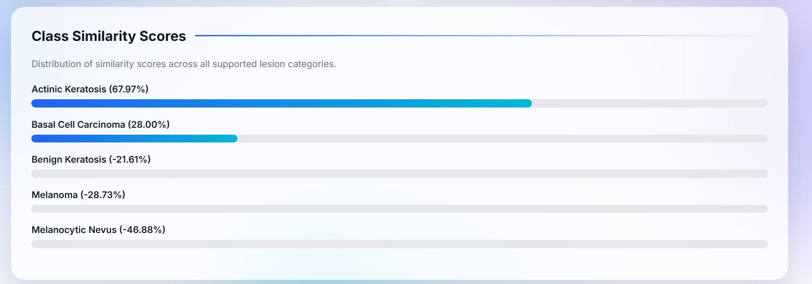
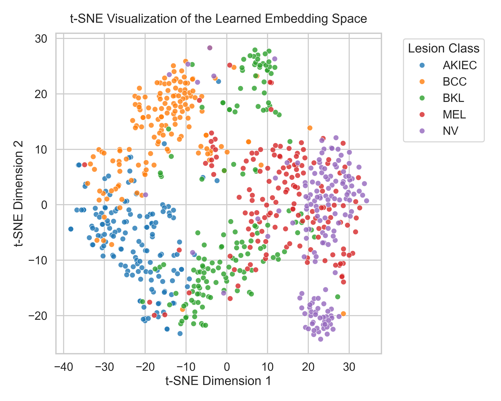

Explainable Prototype-Based Few-Shot Learning Framework for Skin Lesion Classification, OOD Detection, Similarity-Gap Uncertainty Estimation and Grad-CAM Explainability.
GitHub Repository Research PaperThis project was developed as a research dissertation focused on Explainable Few-Shot Learning (XFSL) for medical image diagnosis. The framework combines EfficientNet-B0 feature extraction, prototype-based reasoning, Out-of-Distribution detection, uncertainty estimation and Grad-CAM explainability into a unified clinical decision support system.

Prototype-based classification under limited data conditions.
Rejects unfamiliar samples using cosine similarity thresholding.
Provides interpretable uncertainty estimation.
Visual explanations highlighting diagnostically relevant regions.





Source Code, Research Paper, Experimental Results, Deployment Files and Documentation are available through the GitHub repository.
View Repository